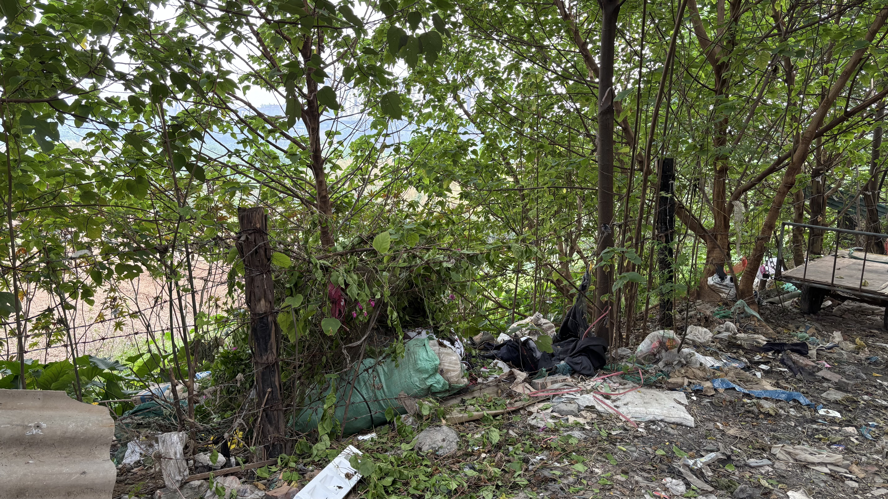
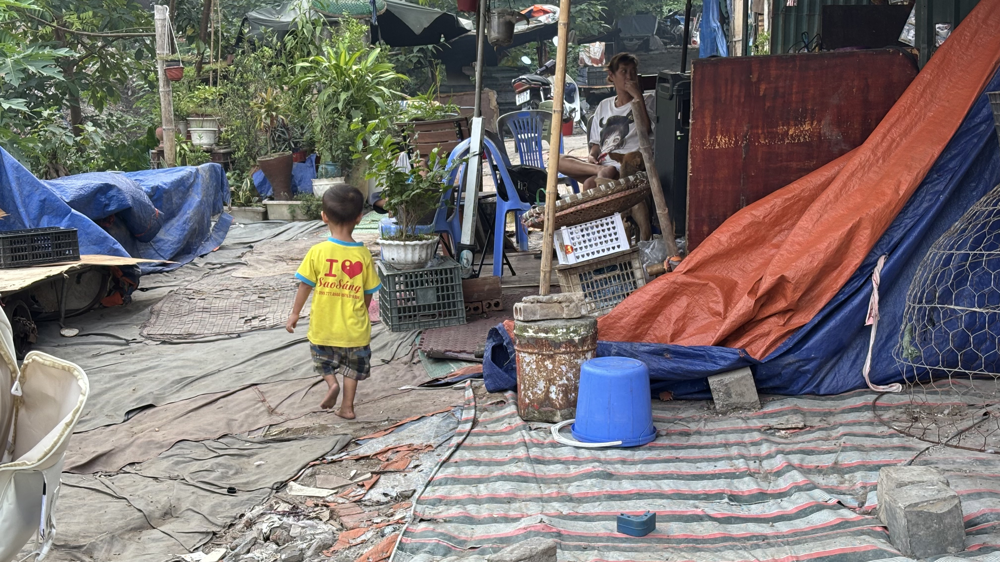
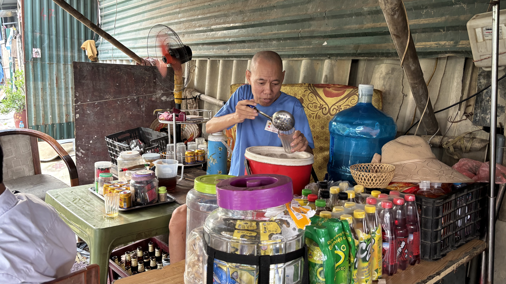

Tích Tụ Vi Nhựa
Nuốt phải 0,1 – 5g vi nhựa/tuần do uống nước bẩn hoặc tiêu thụ hải sản sống trong môi trường ô nhiễm. Điều này kích hoạt phản ứng viêm, gây stress oxy hóa và làm rối loạn quá trình chuyển hóa năng lượng.

Bùng Phát Dịch Bệnh Truyền Nhiễm
Làm hàng triệu người tử vong mỗi năm trên toàn cầu do sử dụng nguồn nước lẫn chất thải sinh hoạt, phân và vi sinh vật gây bệnh (vi khuẩn, virus). Lây lan các bệnh nguy hiểm như tiêu chảy cấp, tả, kiết lỵ, thương hàn, viêm gan A và bại liệt.
Tổn Thương Đa Cơ Quan
Cơ thể hấp thụ các chất độc hóa học (thuốc trừ sâu, phân bón, kim loại nặng) qua đường uống. Gây ung thư, rối loạn nội tiết và biến đổi chức năng brain. Phá hủy hệ miễn dịch, suy giảm chức năng sinh sản, gây biến chứng nặng cho tim mạch và thận.

Bệnh Lý Ngoài Da & Hô Hấp
Bơi lội, tắm rửa hoặc tiếp xúc trực tiếp da/niêm mạc/vết thương hở với nước ô nhiễm. Gây phát ban, viêm kết mạc mắt, nhiễm trùng đường hô hấp và nguy cơ mắc bệnh viêm gan do virus.
